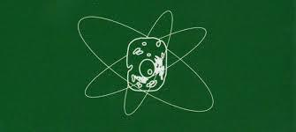
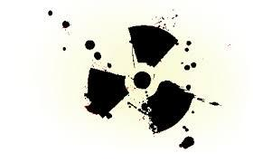
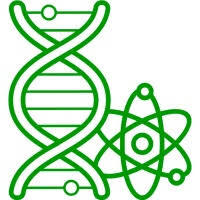
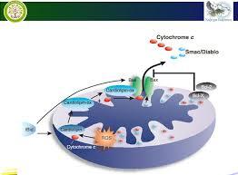

Радіобіологія
Радіобіологія — наука, що вивчає дію іонізуючого випромінювання на біологічні системи усіх рівнів організації: рослини, тварини та людину.
Напрями
- Теоретичні основи дії іонізуючих та неіонізуючих випромінювань на живі організми.
- Методи радіобіологічного експерименту і апаратура в радіаційній біології.
- Радіаційна біофізика.
- Дія іонізуючих та неіонізуючих випромінювань на молекулярному та клітинному рівнях організації живого.
- Радіобіологія організму.
- Загальні проблеми радіаційного ураження організму.
- Радіобіологія ссавців, інших тварин.
- Радіобіологія рослин.
- Методи і засоби захисту від радіаційних уражень. Радіопротектори.
- Радіоекологія.
- Особливості дії іонізуючих та неіонізуючих випромінювань на угруповання живих організмів.
- Міграція радіонуклідів у природних і штучних біогеоценозах.
- Радіаційна гігієна.
- Загальні проблеми радіаційної гігієни.
- Методи радіаційно-гігієнічних досліджень, оцінки радіаційного ризику.
- Радіаційно-гігієнічні моделі.
- Професійний вплив радіаційних факторів і захист від них.
- Радіаційні фактори в комунальній гігієні.
- Післядія радіаційних аварій, ядерних вибухів; розроблення засобів зменшення негативного впливу опромінення на живі організми. Регламентація радіаційної дії.
- Біомедичне використання джерел іонізуючих та неіонізуючих випромінювань.
- Дозиметрія і радіометрія в біології та медицині. Біологічна й екологічна дозиметрія. Радіаційний моніторинг.
- Радіаційні методи і засоби досліджень у біології та медицині.
- Одержання і використання радіофармацевтичних препаратів.
- Прикладна радіобіологія.
- Використання іонізуючих та неіонізуючих випромінювань у сільському господарстві.
- Використання іонізуючих та неіонізуючих випромінювань в харчопереробній промисловості.
- Радіаційна стерилізація.



